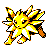
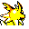

#135
Jolteon
Electric
It accumulates negative ions in the atmosphere to blast out 10000- volt lightning bolts
Base stats Total 430
HP65
Attack65
Defense60
Speed130
Special110
Details
- Species
- Lightning
- Height
- 2'07"
- Weight
- 54.0 lb
- Catch rate
- 45
- Base exp
- 197
- Growth
- Medium Fast
Level-up moves
LevelMoveType
StartTackleNormal
StartSand-AttackNormal
StartQuick AttackNormal
StartThundershockElectric
Lv 6Tail WhipNormal
Lv 9GrowlNormal
Lv 17Thunder WaveElectric
Lv 26Pin MissileBug
Lv 28Thunder WaveElectric
Lv 32LungeBug
Lv 34ThunderboltElectric
Lv 46ThunderElectric
Evolution
Evolves from Eevee
Where to find
TM / HM
TM06 ToxicTM07 Shadow BallTM08 Body SlamTM09 Take DownTM10 Double-EdgeTM15 Hyper BeamTM24 ThunderboltTM25 ThunderTM28 DigTM31 MimicTM32 Double TeamTM33 ReflectTM34 BideTM39 SwiftTM44 RestTM45 Thunder WaveTM50 SubstituteHM04 StrengthHM05 Flash